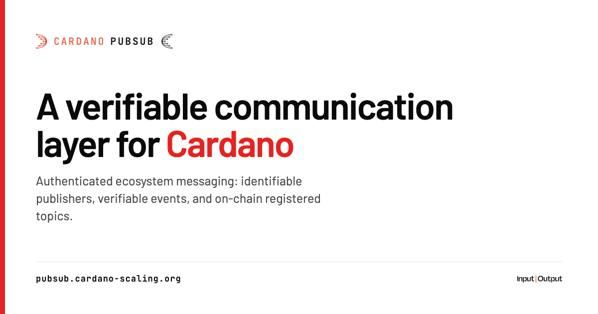
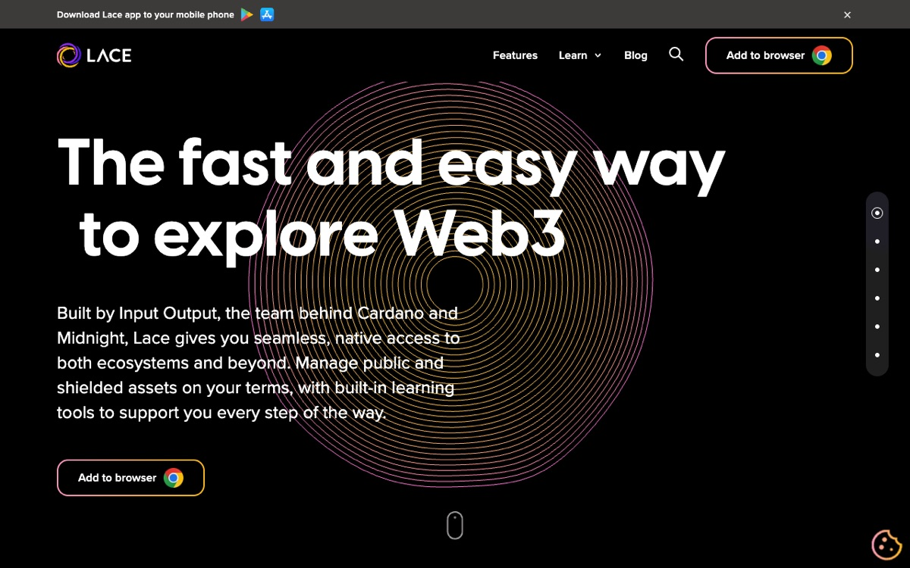
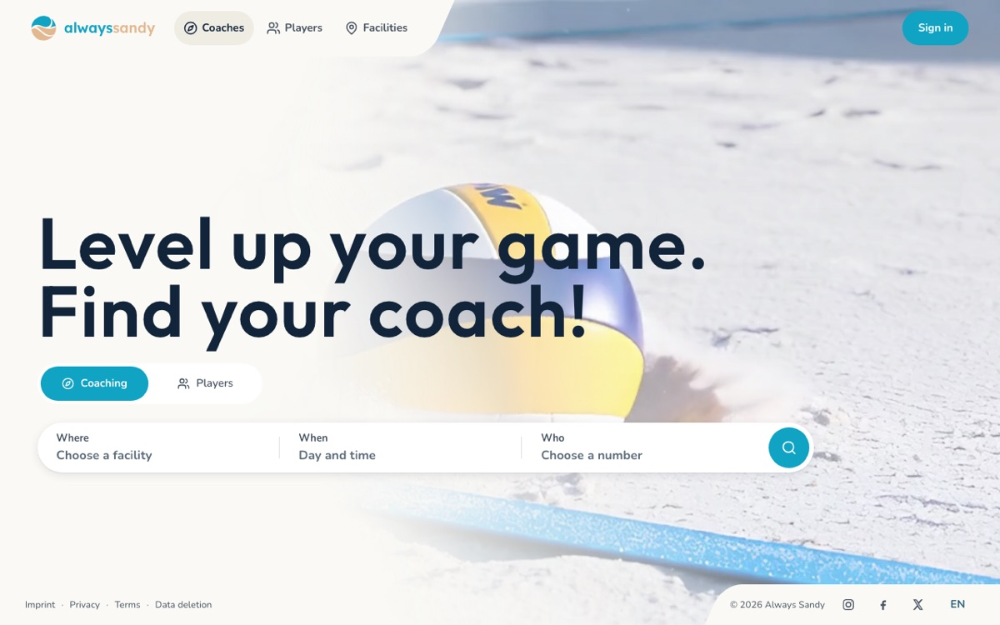
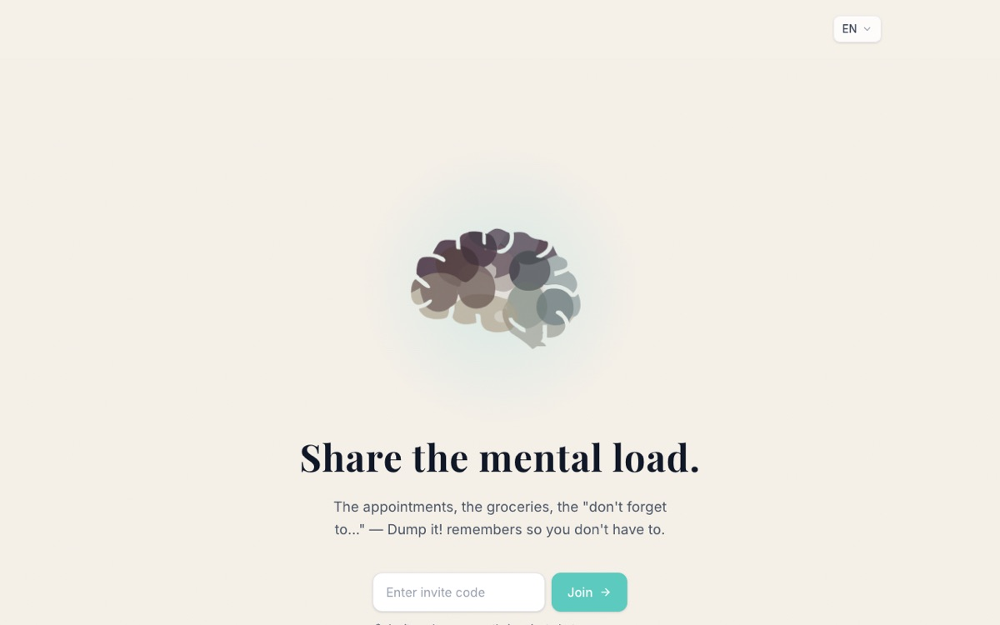
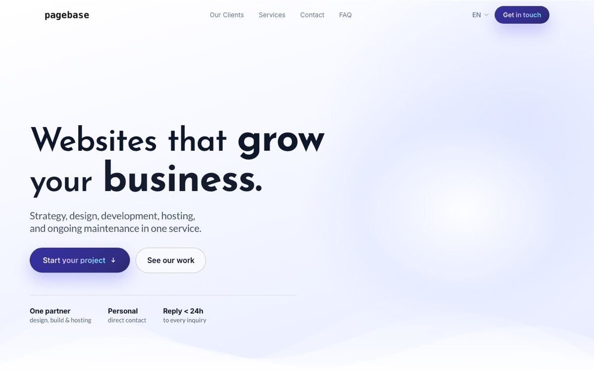
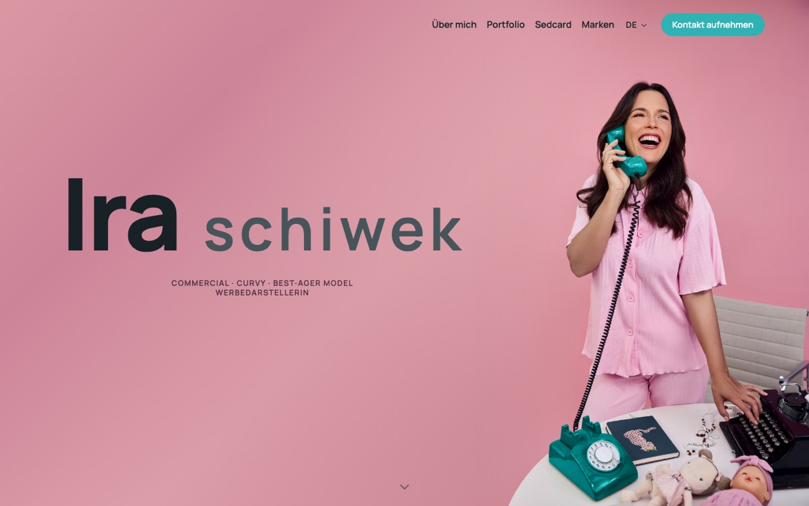
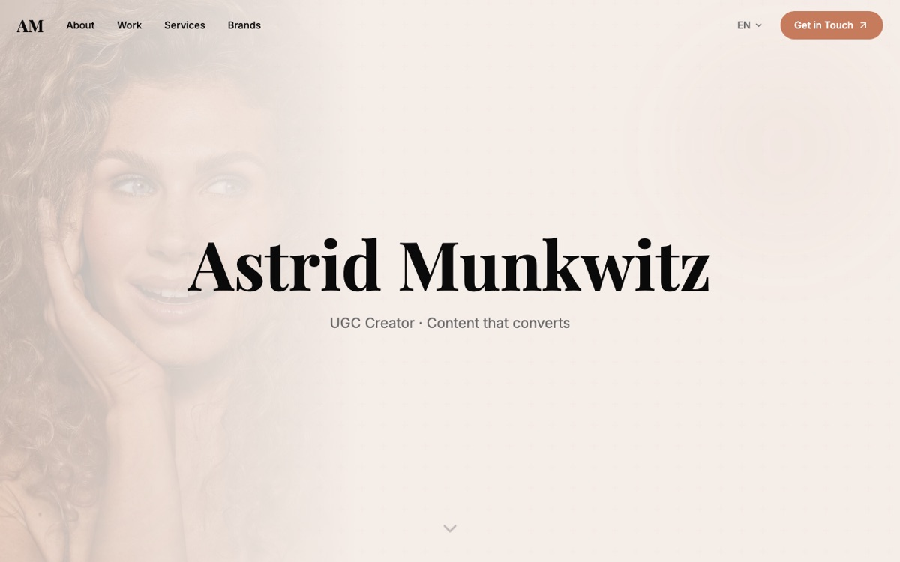
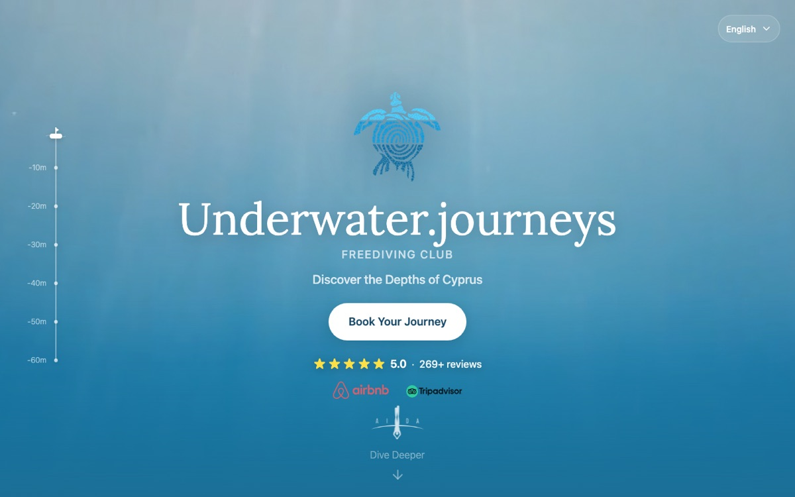

Track recordBilanz
Projects at a glanceProjekte im Überblick
ProjectsProjekte
Things I've worked onWoran ich gearbeitet habe
Some solo, most with clients or great teams.Manches allein, das meiste mit Kunden oder großartigen Teams.
Research & DevelopmentForschung & Entwicklung
4
Technical architect for a Cardano-anchored publish/subscribe layer: identifiable publishers, verifiable events, and on-chain registered topics. Led a team through formal verification of the SecureCyclon peer-sampling protocol stack and built the working prototype.

Principal author of CIP-0164, the canonical architecture design document for Cardano's high-throughput protocol. Built interactive web-based simulator and documentation site with formal specification rendered via custom agda-web-docs-lib.

Interactive mempool visualization tool for the Leios protocol. Explores front-running opportunities and attack vectors to build educational resources for community understanding of protocol security.

Authored the event-driven re-architecture behind Lace, Cardano's light wallet: CQRS and event sourcing for indexing the chain and serving wallets, replacing a poll-based backend with a push model. 45% lower latency, 60%+ infrastructure savings, and a custom indexer using bloom filters and credential-based indexing that ingests 2,000+ tx/s for sub-second sync. The design is published as a CIP and a problem statement, so the reasoning is readable rather than asserted.
ProductsProdukte
5
A social network for Berlin's beach volleyball scene: players find coaches, sessions and each other across the city's sand courts. Ein soziales Netzwerk für Berlins Beachvolleyball-Szene: Spieler finden Trainer, Trainings und einander auf den Sandplätzen der Stadt.
Screening tool for German residential investment listings. Leads with monthly cashflow before tax, keeps after-tax estimates separate, and calculates the equity needed to reach positive cashflow plus cash-on-cash return. Paste a listing link and the figures get extracted for you. Every tax and financing assumption stays visible and editable.

Dump it! – Voice-First Note Taking App
Voice-native cross-platform app built on Supabase (PostgreSQL) with AI-powered intent classification, semantic search, and end-to-end encryption. Features Row Level Security, Edge Functions, real-time sync, Event Sourcing architecture, and vector embeddings.
Production NFT marketplace on Cardano with smart contract integration for trading, bidding, and swapping. Implemented wallet standards and event-driven sync patterns later adopted by IOG.
Berlin Pool – Cardano Stakepool
Production Cardano consensus node infrastructure. Operated 2,000+ blocks with 99.9% uptime and managed 15M+ ADA delegation.
CommercialKundenprojekte
6
Berlin-based freelance agency specializing in Supabase and PostgreSQL backends, web/mobile apps, and AI automation.

Deal-sourcing pipeline for Operando Partners. M&A advisors email deal teasers; the pipeline reads the inbox, pulls the key figures out of the PDF teasers with Claude and drafts a HubSpot lead the team reviews before anything is saved. Email content is treated as untrusted data and never followed as instructions. Deal-Sourcing-Pipeline für Operando Partners. M&A-Berater schicken Deal-Teaser per E-Mail; die Pipeline liest das Postfach, zieht mit Claude die Kennzahlen aus den PDF-Teasern und legt einen HubSpot-Lead an, den das Team vor dem Speichern prüft. E-Mail-Inhalte gelten als nicht vertrauenswürdig und werden nie als Anweisung befolgt.

Portfolio and booking site for a Berlin model, built through Pagebase. Image-heavy layout tuned for fast loads on mobile, bilingual copy, and a contact flow that goes straight to the inbox.

Portfolio and enquiry site for a Berlin UGC creator and commercial model working with DACH brands, built through Pagebase on the shared component kit. Bilingual with locale routing, selected-work galleries and a services and rate section.

Modern website and booking system for a dive center in Cyprus. Mobile-first design with focus on user experience and easy booking management.
TokenRiot.IO – Cardano NFT Marketplace Frontend
Lead frontend developer for TokenRiot's Cardano NFT marketplace from 2022 to 2024, writing roughly 80% of the frontend alongside three other contributors. Next.js and Redux Toolkit client with CIP-30 wallet connection through cardano-serialization-lib and Lucid, CBOR transaction construction, a cached API layer and full internationalisation, built against the platform, chain indexer and smart contract services.
Open-Source ToolingOpen-Source-Tools
5Extended Dolos chain indexer to support DEX script addresses for Lace wallet's swap feature. Custom fork enabling efficient DEX data retrieval and aggregation.
Extended Cardano indexing tool for smart contracts across major DEXes (SundaeSwap, Minswap, WingRiders, MuesliSwap). Comprehensive DeFi data aggregation.
Extended Cardano transaction library with UTXO chaining capability for complex multi-transaction workflows and atomic operation sequences.
Published npm package for swap transaction construction across multiple Cardano DEXes. Foundation for Lace wallet's swap feature.
Educational blockchain implementation from scratch. Built proof-of-work consensus, block validation, and peer-to-peer networking.
TimelineZeitachse
Where I have workedWo ich gearbeitet habe
Input Output Global (IOG)
4 yrs 11 mo · Remote · Contract · Nov 2021 – Present 4 Jahre, 11 Monate · Remote · Auf Vertragsbasis · Nov 2021 – HeuteAlongside, on my own time: Berlin Pool, Drip Dropz, Dump it!, Pagebase, Hausnummer, Operando and five client sites. CIP-0164 published 2025. Nebenbei, in eigener Zeit: Berlin Pool, Drip Dropz, Dump it!, Pagebase, Hausnummer, Operando und fünf Kundenseiten. CIP-0164 veröffentlicht 2025.
Software Engineer & Architect – Ouroboros Leios Software Engineer & Architekt – Ouroboros Leios
Back on Leios, building Cardano's high-throughput protocol towards mainnet Zurück bei Leios, Arbeit am Hochdurchsatz-Protokoll für Cardano auf dem Weg ins Mainnet
Technical Architect – Byzantine-Resistant PubSub Network Technischer Architekt – Byzantine-Resistant PubSub Network
Led R&D for a Byzantine-resistant pub/sub network, from formal verification to a working prototype Leitete R&D für ein Byzantine-resistentes Pub/Sub-Netzwerk, von formaler Verifikation bis zum funktionsfähigen Prototyp
- Led a team of 4 engineers & researchers designing a Byzantine-resistant pub/sub overlay network Leitete ein Team von 4 Ingenieuren & Forschern beim Entwurf eines Byzantine-resistenten Pub/Sub-Overlay-Netzwerks
- Took the team through formal verification of the SecureCyclon peer-sampling protocol stack and built the working prototype via spec-driven development (spec-kit) Führte das Team durch die formale Verifikation des SecureCyclon Peer-Sampling-Protokoll-Stacks und entwickelte den funktionsfähigen Prototyp mittels Spec-Driven Development (spec-kit)
- Reevaluated peer-sampling protocols for specific security properties Neubewertung von Peer-Sampling-Protokollen hinsichtlich spezifischer Sicherheitseigenschaften
Technical Architect – Ouroboros Leios Technischer Architekt – Ouroboros Leios
Led R&D for Ouroboros Leios, a high-throughput protocol for Cardano blockchain Leitete R&D für Ouroboros Leios, ein Hochdurchsatz-Protokoll für die Cardano Blockchain
- Direct team of 8 researchers & engineers exploring high-throughput overlay protocol Leite Team von 8 Forschern & Engineers bei der Erforschung eines Hochdurchsatz-Overlay-Protokolls
- Authored comprehensive CIP-0164 specification and architecture documentation Verfasste umfassende CIP-0164 Spezifikation und Architekturdokumentation
- Hosted monthly public demo and review sessions on YouTube (~5k views per session, sustained over 1.5 years) with live Q&A, translating complex research into accessible developer content Veranstaltete monatliche öffentliche Demo- und Review-Sessions auf YouTube (~5k Aufrufe pro Session, über 1,5 Jahre) mit Live Q&A, übersetzte komplexe Forschung in zugänglichen Developer Content
- Organized week-long technical workshop bringing together researchers, engineers, and community members Organisierte einwöchigen technischen Workshop mit Forschern, Engineers und Community-Mitgliedern
- Technical point of contact for the project, presenting progress and findings in large internal reviews and publicly at leios.cardano-scaling.org Technischer Ansprechpartner des Projekts, präsentiere Fortschritte und Ergebnisse in großen internen Reviews und öffentlich unter leios.cardano-scaling.org
- Investigated MEV (Miner Extractable Value) impact on Leios via mempool analysis and simulation Untersuchte MEV-Auswirkungen (Miner Extractable Value) auf Leios mittels Mempool-Analyse und -Simulation
Technical Architect – Lace Wallet Technischer Architekt – Lace Wallet
Led technical architecture for Lace with Event-Driven Architecture, delivering 45% performance improvement Leitete technische Architektur für Lace mit Event-Driven Architecture, erreichte 45% Leistungsverbesserung
- Re-engineered wallet backend to event-driven architecture with CQRS pattern → 45% latency reduction, >60% cost savings Entwickelte Wallet-Backend zu event-driven architecture mit CQRS-Pattern um → 45% Latenzreduktion, >60% Kosteneinsparungen
- Took the re-architected backend to production for the public Lace 1.0 go-live Brachte das neu aufgebaute Backend für den öffentlichen Lace 1.0 Go-Live in Produktion
- Built custom chain indexer with bloom filters achieving >2,000 tx/s ingest capacity Entwickelte Custom Chain Indexer mit Bloom-Filtern mit >2.000 tx/s Ingest-Kapazität
- Led 7-person cross-functional team delivering MetaDex swap feature integrating Plutus smart contracts Leitete 7-köpfiges cross-funktionales Team bei der Entwicklung des MetaDex Swap Features mit Plutus Smart Contracts
- Authored CIP proposal for wallet indexing standards following DDD bounded context principles Verfasste CIP-Vorschlag für Wallet-Indexing-Standards nach DDD Bounded-Context-Prinzipien
Solutions Architect Solutions Architect
Designed blockchain solutions and educated enterprise partners on Cardano architecture Entwarf Blockchain-Lösungen und schulte Enterprise-Partner in Cardano-Architektur
- Designed complete Plutus smart-contract stack for collateralized debt position (CDP) platform Entwarf vollständigen Plutus Smart-Contract Stack für Collateralized Debt Position (CDP) Plattform
- Delivered technical workshops and hands-on training for 100+ Amazon engineers on distributed systems architecture Führte technische Workshops und Hands-on Training für 100+ Amazon Engineers zu Distributed Systems Architektur durch
- Created educational content and documentation enabling developer adoption of complex technical concepts Erstellte Educational Content und Dokumentation zur Förderung der Developer Adoption komplexer technischer Konzepte
Mobility Data Lab GmbH
1 yr 9 mo · Berlin, DE · Feb 2020 – Nov 2021 1 Jahr, 9 Monate · Berlin, DE · Feb 2020 – Nov 2021Senior Software Engineer Senior Software Engineer
Built IoT and data processing systems for connected vehicle platform Entwickelte IoT- und Datenverarbeitungssysteme für Connected-Vehicle-Plattform
- Delivered complete over-the-air (OTA) fleet-update pipeline for connected vehicle hardware Lieferte vollständige Over-the-Air (OTA) Flotten-Update-Pipeline für Connected-Vehicle-Hardware
- Built WiFi audience-tracking system using embedded devices (Rust) in vehicles Entwickelte WiFi-Audience-Tracking-System mit Embedded Devices (Rust) in Fahrzeugen
- Go-live of the pilot with 20+ vehicles for Miles and Share Now car-sharing services Go-Live des Piloten mit 20+ Fahrzeugen für Miles und Share Now Carsharing-Services
- Developed real-time ad pricing based on audience measurement (Vert.x, ELK stack) Entwickelte Echtzeit-Werbepreis-Berechnung basierend auf Audience-Messung (Vert.x, ELK Stack)
Deloitte US
3 yrs 2 mo · Sep 2016 – Nov 2019 3 Jahre, 2 Monate · Sep 2016 – Nov 2019Lead Engineer & Senior Software Engineer Lead Engineer & Senior Software Engineer
Led migration of 16M lines of code, saving €6M annually in licensing costs Leitete Migration von 16M Zeilen Code, sparte €6M jährlich an Lizenzkosten
- Cut annual license costs by €6M for major German insurance company Reduzierte jährliche Lizenzkosten um €6M für großes deutsches Versicherungsunternehmen
- Grew team from 3 → 20 engineers after promotion to lead Vergrößerte Team von 3 → 20 Engineers nach Beförderung zum Lead
- Took the migrated insurance platform to its production go-live Führte die migrierte Versicherungsplattform zum Produktiv-Go-Live
- Achieved >99.9% compatibility through differential testing framework Erreichte >99,9% Kompatibilität durch Differential-Testing-Framework
Software Engineer Software Engineer
Built the migration toolchain that moved 16M lines of legacy code to Java Entwickelte die Migrations-Toolchain, die 16M Zeilen Legacy-Code nach Java migrierte
- Architected 3-stage migration toolchain (parser → converter → runtime) for 16M LoC transformation Entwarf 3-stufige Migrations-Toolchain (Parser → Converter → Runtime) für 16M LoC Transformation
- Moved 16M lines of code from a legacy DSL to Java 8 Migrierte 16M Zeilen Code von einer Legacy-DSL nach Java 8
- Production go-live for a US state pension fund and social security agency Produktiv-Go-Live für Pensionsfonds und Sozialversicherung eines US-Bundesstaats
CityXcape Inc.
1 yr 7 mo · San Francisco, CA · Feb 2015 – Sep 2016 1 Jahr, 7 Monate · San Francisco, CA · Feb 2015 – Sep 2016Founded while finishing the M.A. at Hult in San Francisco. Gegründet während des M.A. an der Hult in San Francisco.
Co-Founder & CTO Co-Founder & CTO
Co-founded social discovery platform, raised €150k seed funding Co-gründete Social-Discovery-Plattform, sammelte €150k Seed-Funding
- Co-founded social discovery platform for exploring cities through community recommendations Co-gründete Social-Discovery-Plattform zum Erkunden von Städten durch Community-Empfehlungen
- Raised ~€150k in seed funding from angel investors Sammelte ~€150k Seed-Funding von Angel-Investoren
- Built iOS native app (Swift) and Django/Ruby on Rails backend from concept to App Store launch Entwickelte iOS Native App (Swift) und Django/Ruby on Rails Backend vom Konzept bis zum App Store Launch
Hult International Business School
M.A. International Business · San Francisco, CA · 2014 – 2015 M.A. International Business · San Francisco, CA · 2014 – 2015DHBW Stuttgart
B.Sc. Computer Science · Germany · 2011 – 2014 B.Sc. Informatik · Deutschland · 2011 – 2014StackStack
Tools I've worked withWomit ich gearbeitet habe
AI & Agents KI & Agenten
Languages Sprachen
Frameworks & Tools Frameworks & Tools
Infrastructure & Data Infrastruktur & Daten
Blockchain, DLT & Cryptography Blockchain, DLT & Kryptographie
WritingPublikationen
Published specificationsVeröffentlichte Spezifikationen
CIP: Decentralised Pub/Sub Message Dissemination
The protocol behind Cardano PubSub: identifiable publishers, verifiable events and on-chain registered topics, disseminated over a Byzantine-resistant overlay. Das Protokoll hinter Cardano PubSub: identifizierbare Publisher, verifizierbare Events und on-chain registrierte Topics, verteilt über ein Byzantine-resistentes Overlay.
CPS: Trustworthy Off-chain Message Dissemination
Why Cardano needs a way to spread off-chain messages that participants can trust, and what any solution has to guarantee. Warum Cardano einen Weg braucht, Off-chain-Nachrichten vertrauenswürdig zu verbreiten, und was jede Lösung garantieren muss.
CIP-0164: Ouroboros Leios
Canonical architecture and design specification for Cardano's high-throughput overlay protocol — an open industry RFC comparable to Bitcoin's BIPs and IETF standards. Kanonische Architektur- und Designspezifikation für Cardanos Hochdurchsatz-Overlay-Protokoll — ein offener Industrie-RFC vergleichbar mit Bitcoins BIPs und IETF-Standards.
CIP-0118: Nested Transactions
Ledger-level batching of partially valid transactions, so a transaction missing value or fees can be completed by another one in the same batch. It is the mechanism behind Babel fees, paying fees in non-ADA tokens, and it gives swaps and fee sponsorship counterparty irrelevance: the author of a transaction never has to approve the batch it lands in. Ledger-seitiges Bündeln teilweise gültiger Transaktionen, sodass eine Transaktion ohne ausreichende Deckung oder Gebühren von einer anderen im selben Batch vervollständigt wird. Es ist der Mechanismus hinter Babel Fees, dem Bezahlen von Gebühren in Nicht-ADA-Token, und macht Swaps und Gebührenübernahme unabhängig von der Gegenpartei: wer eine Transaktion erstellt, muss den Batch nie freigeben.